화공기사 (2022-03-05 기출문제)
1과목: 공업합성
1. 기하이성질체를 나타내는 고분자가 아닌 것은?
- 폴리부타디엔
- 폴리크로로프렌
- 폴리이소프렌
- 폴리비닐알코올
(정답률: 48%)

2. 양쪽성 물질에 대한 설명으로 옳은 것은?
- 동일한 조건에서 여러 가지 축합반응을 일으키는 물질
- 수계 및 유계에서 계면활성제로 작용하는 물질
- pKa 값이 7 이하인 물질
- 반응조건에 따라 산으로도 작용하고 염기로도 작용하는 물질
(정답률: 82%)
3. 염화물의 에스테르화 반응에서 Schotten-Baumann법에 해당하는 것은?
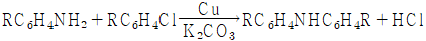
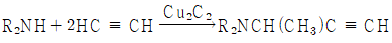
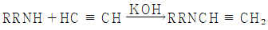
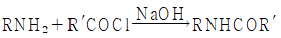
(정답률: 47%)
4. 질산의 직접 합성 반응식이 아래와 같을 때 반응 후 응축하여 생성된 질산 용액의 농도(wt%)는?
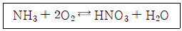
- 68
- 78
- 88
- 98
(정답률: 75%)
5. 가성소다 공업에서 전해액의 저항을 낮추기 위해서 수행하는 조작은?
- 전해액 중의 기포가 증가되도록 한다.
- 두 전극 간의 거리를 증가시킨다.
- 전해액의 온도 및 NaCl의 농도를 높여준다.
- 전해액의 온도를 저온으로 유지시켜 준다.
(정답률: 40%)
6. 합성염산의 원료기체를 제조하는 방법은?
- 공기의 액화
- 공기의 아크방전법
- 소금물의 전해
- 염화물의 치환법
(정답률: 62%)
7. 옥탄가가 낮은 나프타를 고옥탄가의 가솔린으로 변화시키는 공정은?
- 스위트닝 공정
- MTG 공정
- 가스화 공정
- 개질 공정
(정답률: 65%)
8. 칼륨 비료에 속하는 것은?
- 유안
- 요소
- 볏집재
- 초안
(정답률: 53%)
9. 아래의 구조를 갖는 물질의 명칭은?
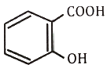
- 석탄산
- 살리실산
- 톨루엔
- 피크르산
(정답률: 75%)
10. 환원반응에 의해 알코올(alcohol)을 생성하지 않는 것은?
- 카르복시산
- 나프탈렌
- 알데히드
- 케톤
(정답률: 70%)
11. 석유의 접촉분해 시 일어나는 반응으로 가장 거리가 먼 것은?
- 축합
- 탈수소
- 고리화
- 이성질화
(정답률: 56%)
12. 나프타의 열분해 반응은 감압 하에 하는 것이 유리하나 실제에는 수증기를 도입하여 탄화수소의 분압을 내리고 평형을 유지하게 한다. 이러한 조건으로 하는 이유가 아닌 것은?
- 진공가스 펌프의 에너지 효율을 높인다.
- 중합 등의 부반응을 억제한다.
- 수성가스 반응에 의한 탄소석출을 방지한다.
- 농축에 의해 생성물과의 분류가 용이하다.
(정답률: 43%)
13. 격막식 전해조에서 전해액은 양극에 도입되어 격막을 통해 음극으로 흐르고, 음극실의 OH- 이온이 역류한다. 이 때 격막실 전해조 양극의 재료는?
- 철망
- Ni
- Hg
- 흑연
(정답률: 65%)
14. 천연고무와 가장 관계가 깊은 것은?
- Propane
- Ethylene
- Isoprene
- Isobutene
(정답률: 63%)
15. 아래와 같은 특성을 가지고 있는 연료전지는?
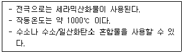
- 인산형 연료전지(PAFC)
- 용융탄산염 연료전지(MCFC)
- 고체산화물형 연료전지(SOFC)
- 알칼리연료전지(AFC)
(정답률: 56%)
16. HCl 가스를 합성할 때 H2 가스를 이론량보다 과잉으로 넣어 반응시키는 이유로 가장 거리가 먼 것은?
- 폭발 방지
- 반응열 조절
- 장치부식 억제
- Cl2 가스의 농축
(정답률: 47%)
17. 황산의 원료인 아황산가스를 황화철광(iron pyrite)을 공기로 완전 연소하여 얻고자 한다. 황화철광의 10%가 불순물이라 할 때 황화철광 1톤을 완전연소 하는데 필요한 이론 공기량(Sm3)은? (단, S와 Fe의 원자량은 각각 32amu와 56amu이다.)
- 460
- 580
- 2200
- 2480
(정답률: 30%)
18. 석회질소 비료 제조 시 반응되고 남은 카바이드는 수분과 반응하여 아세틸렌 가스를 생성한다. 1kg 석회질소 비료에서 아세틸렌 가스가 200L 발생하였을 때, 비료 중 카바이드의 함량(wt%)은? (단, Ca의 원자량은 40amu이고, 아세틸렌 가스의 부피 측정은 20℃, 760 mmHg에서 진행하였다.)
- 53.2%
- 63.5%
- 78.8%
- 83.9%
(정답률: 23%)
19. p형 반도체를 제조하기 위해 실리콘에 소량 첨가하는 물질은?
- 인듐
- 비소
- 안티몬
- 비스무스
(정답률: 52%)
20. syndiotactic polystyrene의 합성에 관여하는 촉매로 가장 적합한 것은?
- 메탈로센 촉매
- 메탈옥사이드 촉매
- 린들러 촉매
- 벤조일퍼록사이드
(정답률: 34%)
2과목: 반응운전
21. 화학반응의 평형상수(K)에 관한 내용 중 틀린 것은? (단, ai, νi는 각각 i 성분의 활동도와 양론수이며 △G°는 표준 깁스(Gibbs) 자유에너지 변화이다.)
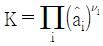
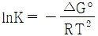
- K는 온도에 의존하는 함수이다.
- K는 무차원이다.
(정답률: 62%)
22. 수중기 1L를 1기압에서 5기압으로 등온압축했을 때 부피 감소량(cm3)은? (단, 등온압축률은 4.53×10-5 atm-1 이다.)
- 0.181
- 0.225
- 1.81
- 2.25
(정답률: 49%)
23. 어떤 산 정상에서 질량(mass)이 600kg인 물체를 10m 높이까지 들어 올리는데 필요한 일(kgf·m)은? (단, 지표면과 산 정상에서의 중력가속도는 각각 9.8 m/s2, 9.4 m/s2 이다.)
- 600
- 1255
- 3400
- 5755
(정답률: 70%)
24. C와 O2, CO2의 임의의 양이 500℃ 근처에서 혼합된 2상계의 자유도는?
- 1
- 2
- 3
- 4
(정답률: 34%)
25. 혼합물의 융해, 기화, 승화 시 변하지 않는 열역학적 성질에 해당하는 것은?
- 엔트로피
- 내부에너지
- 화학포텐셜
- 엔탈피
(정답률: 63%)
26. 열용량이 일정한 이상기체의 PV 도표에서 일정 엔트로피 곡선과 일정 온도 곡선에 대한 설명 중 옳은 것은?
- 두 곡선 모두 양(positive)의 기울기를 갖는다.
- 두 곡선 모두 음(negative)의 기울기를 갖는다.
- 일정 엔트로피 곡선은 음의 기울기를, 일정 온도 곡선은 양의 기울기를 갖는다.
- 일정 엔트로피 곡선은 양의 기울기를, 일정 온도 곡선은 음의 기울기를 갖는다.
(정답률: 42%)
27. 활동도계수(Activity coefficient)에 관한 식으로 옳게 표시된 것은? (단, GE는 혼합물 1mol에 대한 과잉 깁스에너지이며, γi는 i 성분의 활동도계수, n은 전체 몰수, ni는 i 성분의 몰수, nj는 i 성분 이외의 몰수를 나타낸다.)
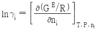
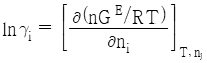
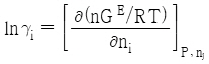
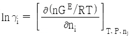
(정답률: 50%)
28. 정상상태로 흐르는 유체가 노즐을 통과할 때의 일반적인 에너지 수지식은? (단, H는 엔탈피, U는 내부에너지, KE는 운동에너지, PE는 위치에너지, Q는 열, W는 일을 나타낸다.)
- △H = 0
- △H + △KE = 0
- △H + △PE = 0
- △U = Q - W
(정답률: 53%)
29. 여름철 실내 온도를 26℃ 로 유지하기 위해 열펌프의 실내측 방열판의 온도를 5℃, 실외측 방열판의 온도를 18℃로 유지하여야 할 때, 이 열펌프의 성능계수는?
- 21.40
- 19.98
- 15.56
- 8.33
(정답률: 56%)
30. 가역과정(Reversible process)에 관한 설명 중 틀린 것은?
- 연속적으로 일련의 평형상태들을 거친다.
- 가역과정을 일으키는 계와 외부와의 포텐셜 차는 무한소이다.
- 폐쇄계에서 부피가 일정한 경우 내부에너지 변화는 온도와 엔트로피변화의 곱이다.
- 자연상태에서 일어나는 실제 과정이다.
(정답률: 48%)
31. 혼합흐름반응기에서 A + R → R + R인 자동촉매반응으로 99mol% A와 1mol% R인 반응물질을 전환시켜서 10mol% A와 90mol% R인 생성물을 얻고자 할 때, 반응기의 체류시간(min)은? (단, 혼합반응물의 초기농도는 1mol/L이고, 반응상수는 1L/mol·min 이다.)
- 6.89
- 7.89
- 8.89
- 9.89
(정답률: 20%)
32. 자동촉매반응(autocatalytic reaction)에 대한 설명으로 옳은 것은?
- 전화율이 작을 때는 플러그흐름 반응기가 유리하다.
- 전화율이 작을 때는 혼합흐름 반응기가 유리하다.
- 전화율과 무관하게 혼합흐름 반응기가 항상 유리하다.
- 전화율과 무관하게 플러그흐름 반응기가 항상 유리하다.
(정답률: 56%)
33. 1차 직렬반응을 아래와 같이 단일반응으로 간주하려 할 때, 단일반응의 반응속도상수(k; s-1)는?
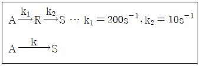
- 11.00
- 9.52
- 0.11
- 0.09
(정답률: 54%)
34. 반응물 A와 B가 R과 S로 반응하는 아래와 같은 경쟁반응이 혼합흐름 반응기(CSTR)에서 일어날 때, A의 전화율이 80% 일 때 생성물 흐름 중 S의 함량(mol%)은? (단, 반응기로 유입되는 A와 B의 농도는 각각 20mol/L 이다.)
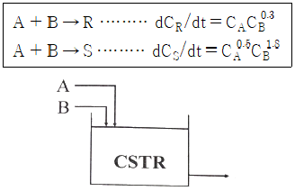
- 33.3
- 44.4
- 55.5
- 66.6
(정답률: 39%)
35. 크기가 다른 두 혼합흐름 반응기를 직렬로 연결한 반응계에 대하여, 정해진 유량과 온도 및 최종 전화율 조건하에서 두 반응기의 부피 합이 최소가 되는 경우에 대한 설명으로 옳지 않은 것은? (단, n은 반응차수를 의미한다.)
- n = 1인 반응에서는 크기가 다른 반응기를 연결하는 것이 이상적이다.
- n ＞ 1인 반응에서는 작은 반응기가 먼저 와야 한다.
- n ＜ 1인 반응에서는 큰 반응기가 먼저 와야 한다.
- 두 반응기의 크기 비는 일반적으로 반응속도와 전화율에 따른다.
(정답률: 72%)
36. A와 B에 각각 1차인 A + B → C 인 반응이 아래의 조건에서 일어날 때, 반응속도(mol/L·s)는?
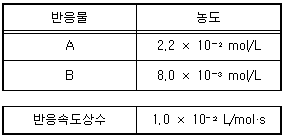
- 2.41×10-6
- 2.41×10-5
- 1.76×10-6
- 1.76×10-5
(정답률: 70%)
37. A가 R을 거쳐 S로 반응하는 연속반응과 A와 R의 소모 및 생성 속도 아래와 같을대, 이 반응을 회분식 반응기에서 반응시켰을 때의 CR/CA0는? (단, 반응 시작 시 회분식 반응기에는 순수한 A만을 공급하여 반응을 시작한다.)
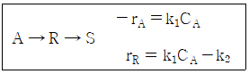
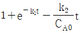
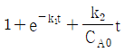
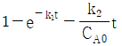
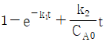
(정답률: 28%)
38. 2A + B → 2C인 기상반응에서 초기 혼합 반응물의 몰비가 아래와 같을 때, 반응이 완료되었을 때 A의 부피 변화율(εA)은? (단, 반응이 진행되는 동안 압력은 일정하게 유지된다고 가정한다.)
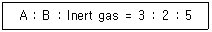
- -0.200
- -0.300
- -0.167
- -0.150
(정답률: 47%)
39. 반응물 A의 농도를 CA, 시간을 t라고 할 때, 0차 반응의 경우 직선으로 나타나는 관계는?
- CA vs t
- lnCA vs t
- CA-1 vs t
- (lnCA)-1 vs t
(정답률: 70%)
40. 공간속도(Space velocity)가 2.5s-1이고 원료 공급 속도가 1초당 100L 일 때 반응기의 체적(L)은?
- 10
- 20
- 30
- 40
(정답률: 70%)
3과목: 단위공정관리
41. 같은 질량을 갖는 2개의 구가 공기중에서 낙하한다. 두 구의 직경비(D1/D2)가 3일 때 입자 레이놀드수(NRe, p ＜ 1.0 이라면 종단속도의 비(V1/V2)는?
- 9
- 9-1
- 3
- 3-1
(정답률: 17%)
42. 물질전달 조작에서 확산현상이 동반되며 물질자체의 분자운동에 의하여 일어나는 확산은?
- 분자확산
- 난류확산
- 상호확산
- 단일확산
(정답률: 61%)
43. 유량측정기구 중 부자 또는 부표(float)라고 하는 부품에 의해 유량을 측정하는 기구는?
- 로터미터(rotameter)
- 벤투리미터(venturi meter)
- 오리피스미터(orifice meter)
- 초음파유량계(ultrasonic meter)
(정답률: 48%)
44. 충전 흡수탑에서 플러딩(flooding)이 일어나지 않게 하기 위한 조건은?
- 탑의 높이를 높게 한다.
- 탑의 높이를 낮게 한다.
- 탑의 직경를 크게 한다.
- 탑의 직경를 작게 한다.
(정답률: 49%)
45. 분쇄에 대한 설명으로 틀린 것은?
- 최종입자가 중요하다.
- 최초의 입자는 무과한다.
- 파쇄물질의 종류도 분쇄동력의 계산에 관계된다.
- 파쇄기 소요일량은 분쇄되어 생성되는 표면적에 비례한다.
(정답률: 66%)
46. 건조장치 선정에서 가장 중요한 사항은?
- 습윤상태
- 화학포텐셜
- 선택도
- 반응속도
(정답률: 60%)
47. 정류탑에서 50mol%의 벤젠-톨루엔 혼합액을 비등 액체 상태로 1000kg/h 의 속도로 공급한다. 탑상의 유출액은 벤젠 99mol% 순도이고 탑저 제품은 톨루엔 98mol%을 얻고자 한다. 벤젠의 액조성이 0.5일 때 평형증기의 조성은 0.72이다. 실제 환류비는? (단, 실제 환류비는 최소 환류비의 3배이다.)
- 0.82
- 1.23
- 2.73
- 3.68
(정답률: 34%)
48. 열전도도가 0.15 kcal/m·h·℃인 100mm 두께의 평면벽 양쪽 표면 온도차가 100℃ 일 때, 이 벽의 1m2 당 전열량(kcal/h)은?
- 15
- 67
- 150
- 670
(정답률: 59%)
49. 무차원 항이 밀도와 관계없는 것은?
- 그라스호프(Grashof) 수
- 레이놀즈(Reynolds) 수
- 슈미트(Schmidt) 수
- 너셀(Nusselt) 수
(정답률: 68%)
50. 낮은 온도에서 증발이 가능해서 증기의 경제적 이용이 가능하고 과즙, 젤라틴 등과 같이 열에 민감한 물질을 처리하는데 주로 사용되는 것은?
- 다중효용 증발
- 고압 증발
- 진공 증발
- 압축 증발
(정답률: 65%)
51. 25℃에서 벤젠이 bomb 열량계 속에서 연소되어 이산화탄소와 물이 될 때 방출된 열량을 실험으로 재어보니 벤젠 1mol 당 780890 cal 였을 때, 25℃에서의 벤젠의 표준연소열(cal)은? (단, 반응식은 다음과 같으며 이상기체로 가정한다.)
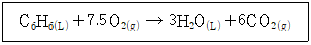
- -781778
- -781588
- -781201
- -780003
(정답률: 34%)
52. 101kPa에서 물 1mol을 80℃에서 120℃까지 가열할 때 엔탈피 변화(kJ)는? (단, 물의 비열은 75.0 J/mol·K, 물의 기화열은 47.3 kJ/mol, 수증기의 비열은 35.4 J/mol·K 이다.)
- 40.1
- 46.0
- 49.5
- 52.1
(정답률: 52%)
53. Hess의 법칙과 가장 관련이 있는 함수는?
- 비열
- 열용량
- 엔트로피
- 반응열
(정답률: 47%)
54. 1 atm에서 포름알데히드 증기의 내부에너지(U; J/mol)가 아래와 같이 온도(t; ℃)의 함수로 표시될 때, 0℃에서 정용열용량(J/mol·℃)은?
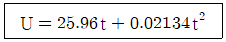
- 13.38
- 17.64
- 21.42
- 25.96
(정답률: 61%)
55. 터빈을 운전하기 위해 2kg/s 의 증기가 5atm, 300℃에서 50m/s 로 터빈에 들어가고 300m/s 속도로 대기에 방출된다. 이 과정에서 터빈은 400kW 의 축일로 하고 100kJ/s의 열을 방출하였다고 할 때, 엔탈피 변화(kW)는?
- 212.5
- -387.5
- 412.5
- -587.5
(정답률: 23%)
56. 압력이 1atm인 화학변화계의 체적이 2L 증가하였을 때 한 일(J)은?
- 202.65
- 2026.5
- 20265
- 202650
(정답률: 42%)
57. 40mol% C2H4Cl2 톨루엔 혼합용액이 100 mol/h로 증류탑에 공급되어 아래와 같은 조성으로 분리될 때, 각 흐름의 속도(mol/h)는?
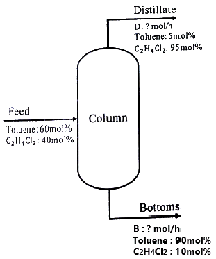
- D = 0.35, B = 0.64
- D = 64.7, B = 35.3
- D = 35.3, B = 64.7
- D = 0.64, B = 0.35
(정답률: 59%)
58. 가스분석기를 사용하여 사염화탄소를 분석하고자 하는데 한쪽에서는 순수 질소가 유입되고 다른 쪽에서는 가스 1L당 280mg의 CCl4를 함유하는 질소가 0.2L/min 의 유속으로 혼합기에 유입되어 혼합된다. 혼합가스가 대기압 하에서 10L/min 의 유량으로 가스분석기에 보내질 때 온도가 24℃로 일정하다면 혼합기 내 혼합가스의 CCl4 농도(mg/L)는? (단, 혼합기의 게이지압은 8cmH2O 이다.)
- 3.74
- 5.64
- 7.28
- 9.14
(정답률: 35%)
59. 주어진 계에서 기체 분자들이 반응하여 새로운 분자가 생성되었을 때 원자백분율 조성에 대한 설명으로 옳은 것은?
- 그 계의 압력 변화에 따라 변화한다.
- 그 계의 온도 변화에 따라 변화한다.
- 그 계내에서 화학 반응이 일어날 때 변화한다.
- 그 계내에서 화학 반응에 관계없이 일정하다.
(정답률: 42%)
60. 수분이 60wt%인 어묵을 500kg/h의 속도로 건조하여 수분을 20wt%로 만들 때 수분의 증발속도(kg/h)는?
- 200
- 220
- 240
- 250
(정답률: 50%)
4과목: 화공계측제어
61. 비례-적분-미분(PID) 제어기가 제어하고 있는 제어시스템에서 정상상태에서의 제어기 출력순 변화가 2라 할 때 정상상태에서의 제어기의 비례 P = kc(ys - y), 적분
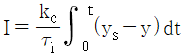
, 미분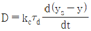
항 각각의 크기는?- P : 0, I : 0, D : 0
- P : 0, I : 2, D : 0
- P : 2, I : 0, D : 0
- P : 0, I : 0, D : 2
(정답률: 38%)
62. 서보(servo)제어에 대한 설명 중 옳은 것은?
- 설정점의 변화와 조작변수와의 동작관계이다.
- 부하와 조작변수와의 동작관계이다.
- 부하와 설정점의 동시변화에 대한 조작변수와의 동작관계이다.
- 설정점의 변화와 부하와의 동작관계이다.
(정답률: 39%)
63. 특성방정식이
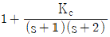
으로 표현되는 선형 제어계에 대하여 Routh-Hurwitz의 안정 판정에 의한 Kc의 범위는?- Kc ＜ -1
- Kc ＞ -1
- Kc ＞ -2
- Kc ＜ -2
(정답률: 39%)
64. 밸브, 센서, 공정의 전달함수가 각각 Gv(s) = Gm(s) = 1,
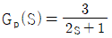
인 공정시스템에 비례제어기로 피드백 제어계를 구성할 때, 성취될 수 있는 폐회로(closed-loop) 전달함수는?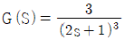
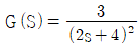
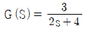
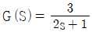
(정답률: 45%)
65. 다음의 비선형계를 선형화하여 편차변수 y′ = y – yss, u′ = u – uss로 표현한 것은?
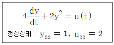
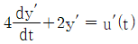
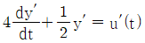
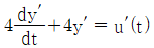
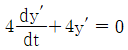
(정답률: 36%)
66. 다음 중 2차계에서 overshoot를 가장 크게 하는 제동비(damping factor; ζ)는?
- 0.1
- 0.5
- 1
- 10
(정답률: 23%)
67. 개방회로 전달함수가
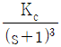
인 제어계에서 이득여유(gain margin)가 2.0이 되는 Kc는?- 2
- 4
- 6
- 8
(정답률: 39%)
68. 교반탱크에 100L의 물이 들어있고 여기에 10%의 소금용액이 5L/min로 공급되며 혼합액이 같은 유속으로 배출될 때 이 탱크의 소금농도식의 Laplace 변환은?
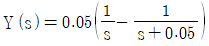
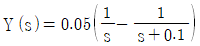
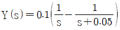
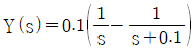
(정답률: 36%)
69. 어떤 1차계의 전달함수는 1/(2s+1)로 주어진다. 크기 1, 지속시간 1인 펄스입력변수가 도입되었을 때 출력은? (단, 정상상태에서의 입력과 출력은 모두 0 이다.)
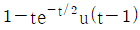
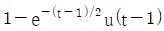
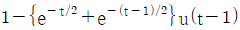
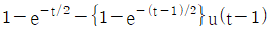
(정답률: 23%)
70. 다음 함수의 Laplace 변환은? (단, u(t)는 단위계단함수이다.)
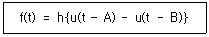
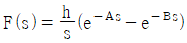
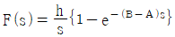
(정답률: 61%)
71. 어떤 공정의 열교환망 설계를 위한 핀치 방법이 아래와 같을 때, 틀린 설명은?
- 최소 열교환 온도차는 10℃ 이다.
- 핀치의 상부의 흐름은 5개이다.
- 핀치의 온도는 고온 흐름 기준 140℃ 이다.
- 유틸리티로 냉각수와 수증기를 모두 사용한다고 할 때 핀치 방법으로 필요한 최소 열교환 장치는 7개이다.
(정답률: 25%)
72. 발열이 있는 반응기의 온도제어를 위해 그림과 같이 냉각수를 이용한 열교환으로 제열을 수행하고 있다. 다음 중 옳은 설명은?
- 공압 구동부와 밸브형은 각각 ATO(Air-To-Open), 선형을 택하여야 한다.
- 공압 구동부와 밸브형은 각각 ATC(Air-To-Close), Equal Percentage(등비율)형을 택하여야 한다.
- 공압 구동부와 밸브형은 각각 ATO(Air-To-Open), Equal Percentage(등비율)형을 택하여야 한다.
- 공압 구동부는 ATC(Air-To-Close)를 택해야 하지만 밸브형은 이 정보만으로는 결정하기 어렵다.
(정답률: 25%)
73. 제어계의 구성요소 중 제어오차(에러)를 계산하는 부분은?
- 센서
- 공정
- 최종제어요소
- 피드백 제어기
(정답률: 53%)
74. 어떤 제어계의 특성방정식이 다음과 같을 때 한계주기(ultimate period)는?
(정답률: 45%)
75. 4~20mA를 출력으로 내어주는 온도 변환기의 측정폭을 0℃에서 100℃ 범위로 설정하였을 때 25℃에서 발생한 표준 전류신호(mA)는?
- 4
- 8
- 12
- 16
(정답률: 54%)
76. 수송 지연(transporation lag)의 전달함수가 일 때, 위상각(phase angle; ø)은? (단, ω는 각속도를 의미한다.)
(정답률: 37%)
77. 의 전달함수를 갖는 계에서 라고 할 때, 상태함수를 로 나타낼 수 있다. 이 때, 행렬 A와 B는? (단, 문자 위 점 “˙”은 시간에 대한 미분을 의미한다.)
(정답률: 39%)
78. 의 라플라스 역변환은?
(정답률: 61%)
79. 배관계장도(P&ID)에서 공기 신호(pneumatic signal)와 유압 신호(hydraulic signal)를 나타내는 선이 순서대로 옳게 나열된 것은?
(정답률: 45%)
80. 공장에서 배출되는 이산화탄소를 아민류로 포집하는 시설을 공정설계 시뮬레이터를 사용하여 모사한다고 할 때 적합한 열역학적 물성 모델은?
- UNIFAC
- Ion - NRTL
- Peng-Robinson
- Ieal gas law
(정답률: 23%)